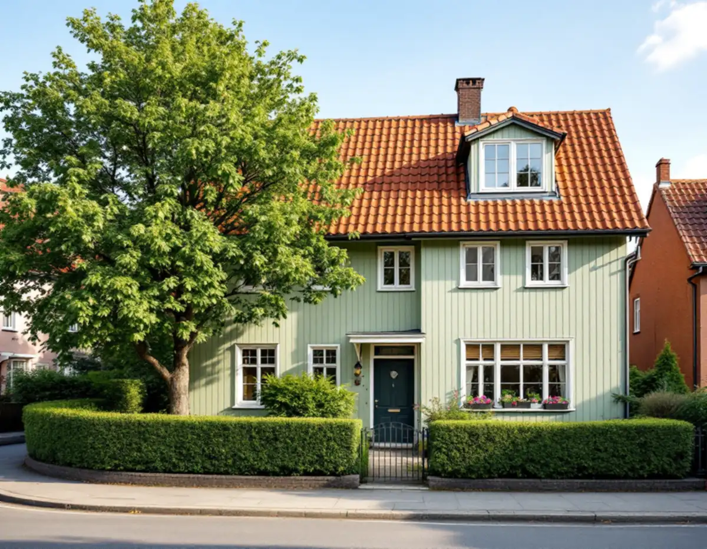
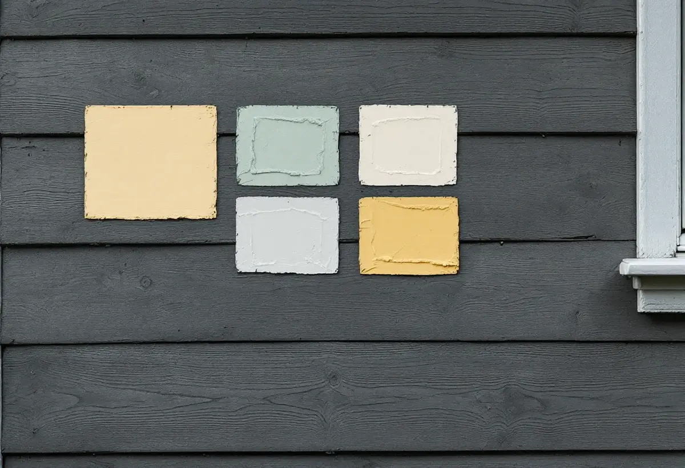

Platsbesök
Vi skrapar fram färglagren på några ställen och tittar på panel, puts och snickerier.
En ny kulör syns från hela gatan, och i Brommas trädgårdsstäder är det just gatans helhet som gör området värdefullt. Geal Entreprenad AB målar om fasader på villor och radhus i Bromma, både träpanel och puts, och hjälper dig välja kulör och färgtyp innan ställningen kommer på plats.

Stadens vägledning om småhusområden beskriver hur trädgårdsstäderna i Bromma fick enkla hus i ett och ett halvt plan under 1920-talet. Det vanligaste fasadmaterialet blev stående träpanel med tunn lockläkt, men puts förekom också. Färgerna höll sig enligt vägledningen inom en skala av ljusa, dämpade nyanser av grönt, gult eller grått. I Äppelviken tog det nationalromantiska draget mer plats, med branta tak och småspröjsade fönster, och fasaderna var ofta liggande panel eller spån, tjärade eller målade med röd slamfärg, och om Smedslätten skriver staden att just färgsättning och kulörer hör till det karaktäristiska.
Tabellen i slutet av vägledningen markerar bland annat Nockebyhov, Nockeby, Höglandet, Stora Mossen, Smedslätten, Äppelviken och delar av Alvik och Ulvsunda som kulturhistoriskt värdefulla miljöer. Flera av dem är dessutom markerade för generösa byggrätter, så nya hus och tillbyggnader kan hamna mitt bland 1920-talsvillorna. Rådet för trädgårdsstaden är att ta tillvara eller återskapa karaktärsskapande material och kulörer så långt det går. För nya tillägg skriver staden att de ska ta tillvara kulör och material men inte nödvändigtvis kopiera huset.

Länsstyrelsernas informationsblad om målning utomhus på trä konstaterar att det är svårt att föreställa sig hur ett litet färgprov ser ut på en hel fasad. Bladet råder att köpa små burkar och provmåla några kvadratmeter innan man bestämmer sig. Vi lägger provytorna där de syns från gatan och målar ett foder och en knutbräda bredvid, så att du ser kulörerna tillsammans.
Vill du komma nära husets ursprungliga färg finns två vägar enligt bladet: skrapa fram äldre färglager med en vass kniv, eller ta hjälp av en konservator som tar prover och analyserar dem. Bladet påminner också om att utomhusfärg fram till 1950-talet nästan bara gjordes med billiga jordpigment, och att kulörerna därför var jordiga, från brunt över rött och gult till grågröna toner. En villa från 1920-talet har alltså sannolikt haft en kulör inom den skalan.
Riksantikvarieämbetets handbok om byggnadsmåleri beskriver slamfärg som matt, vattenspädbar och fuktgenomsläpplig. Den fäster bra på ohyvlat virke men sämre på hyvlat. Ska slamfärgen vara ljus i stället för röd bör man enligt handboken använda zinkvitriol i stället för järnvitriol, eftersom järnvitriol kan ge missfärgning och flammighet. Handboken påpekar samtidigt att ljusa slamfärger är mindre tåliga än mörkare, både tekniskt och till utseendet.
Har panelen en gång målats med latex-, alkyd- eller linoljefärg går det enligt handboken inte att gå tillbaka till slamfärg, inte ens om den gamla färgen tas bort. På hyvlad panel som redan bär linoljefärg fortsätter vi därför med linolja. Den stryks mycket tunt, och grundfärgen ska låta underlaget lysa igenom. Tunt målad linoljefärg kan strykas över efter en natt men är helt genomtorr först efter ungefär en månad.
Enligt Boverkets PBL kunskapsbanken krävs inte bygglov för att byta kulör på ett en- eller tvåbostadshus, så länge huset inte omfattas av utökad lovplikt. Stockholms stad skriver att du ska söka lov om huset är markerat med blått eller grönt i Stadsmuseets klassificeringskarta, ligger inom en grön ring för särskilt kulturhistoriskt värdefullt område eller en blå ring för riksintresse, eller har skyddsbestämmelser i detaljplanen. Gult eller grått kräver inget lov om inget annat gäller.
Streckade ytor i kartan är miljöer som ännu inte är inventerade, och där kan lov ändå behövas. Är du osäker kan du mejla Stadsmuseet med adress, fastighetsbeteckning, byggnadsår, tidigare ombyggnader och foton av fasaderna. Museet brukar svara inom tre veckor. Den tiden räknar vi in innan ställningen bokas. Mer om invändig målning finns under målare i Bromma, om lagning av panel och puts under fasadrenovering i Bromma och om målning i stort på sidan om målare.
Vi skrapar fram färglagren på några ställen och tittar på panel, puts och snickerier.
Provytor på fasaden och en kontroll i Stadsmuseets klassificeringskarta.
Förarbete, färgtyp, antal strykningar och ROT-avdrag står var för sig.
Lös färg tas bort för hand och spikar som har krupit upp slås i.
Bart trä grundas och fasaden stryks i lämpligt väder.
Vi går runt huset med dig och bättrar det som behövs.
Skatteverket ger rotavdrag för att måla och rengöra fasader på ett småhus och för att montera och montera ner en byggnadsställning i samband med arbetet. I trädgårdsstäderna är de flesta småhus äganderätter. Stadens områdesfakta för 2025 räknar 503 av 515 småhus i Smedslätten och 389 av 452 i Äppelviken som äganderätter. Är radhuset en bostadsrätt ger fasadmålning däremot inget avdrag.
Avdraget är 30 procent av arbetskostnaden, högst 50 000 kr per person och år och högst 75 000 kr tillsammans med rutavdrag. Färg, material och resor ger inget avdrag. Geal drar avdraget direkt på fakturan.
Fasadens yta och höjd, hur mycket gammal färg som måste bort, vilken färgtyp underlaget kräver och hur många foder, knutar och vindskivor som ska målas väger tyngst. Efter ett kostnadsfritt platsbesök får du ett skriftligt kostnadsförslag.
Fasad, fönster och invändig målning.
Målare i Stockholm →Takbyte, takbesiktning och plåtarbeten.
Takläggare i Bromma →Trädgårdsstäder, tegel och funkistak.
Takrenovering i Bromma →Trädgårdsstad, karta och 30 m² inom plan.
Attefallshus i Bromma →Vind, bärande väggar och en andra bostad.
Byggföretag i Bromma →Trävillor, småstugor och funkisvillor.
Badrumsrenovering i Bromma →Trädgårdsstäder, småstugor och funkis i Bromma.
Fasadrenovering i Bromma →Småspröjs, småstugor och funkis i Bromma.
Fönsterbyte i Bromma →Småstugornas fönster, kitt och linoljefärg.
Fönsterrenovering i Bromma →Villor i trädgårdsstäderna och lägenheter i smalhus.
Golvläggare i Bromma →Slipa furugolvet och behandla med lut och såpa.
Golvslipning i Bromma →Imkanal, småstugor och trävillor.
Köksrenovering i Bromma →Fasad och interiör i Brommas villastäder.
Målare i Bromma →Kupor, låga tak och bleck i Bromma.
Plåtslagare i Bromma →Verandor, entréer och altaner.
Snickare i Bromma →Lertegel, småstugor och solceller i Bromma.
Takbyte i Bromma →Spara och ersätta gamla tapeter.
Tapetsering i Bromma →Småstugor, trädgårdsstad och prickmark.
Tillbyggnad i Bromma →Hela villan i rätt ordning.
Totalrenovering i Bromma →